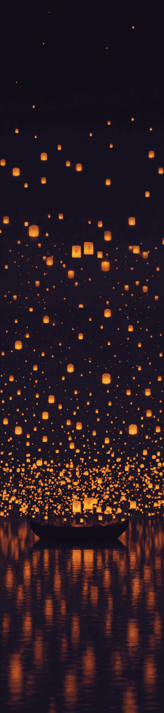
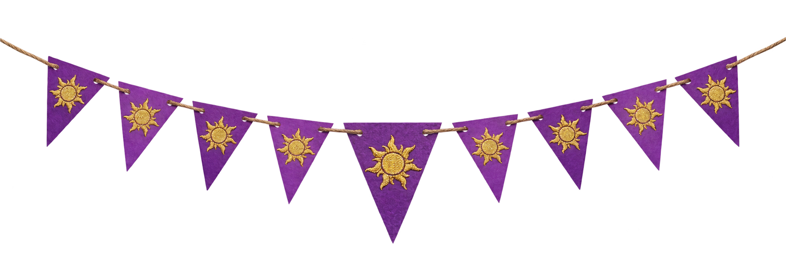
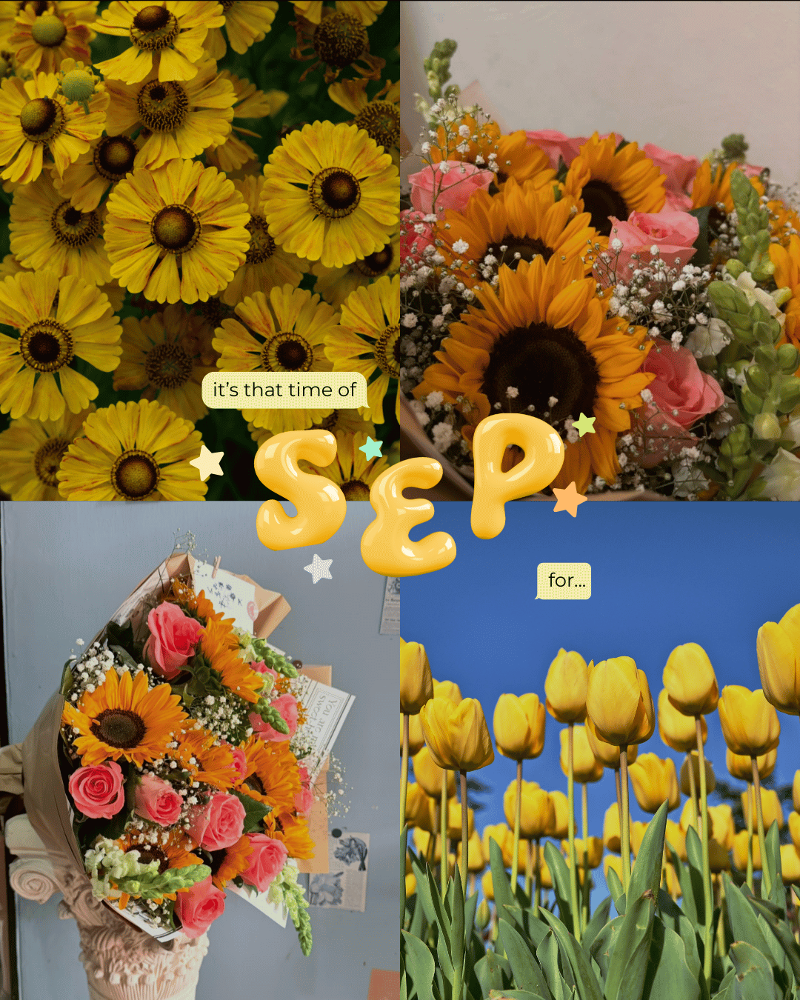
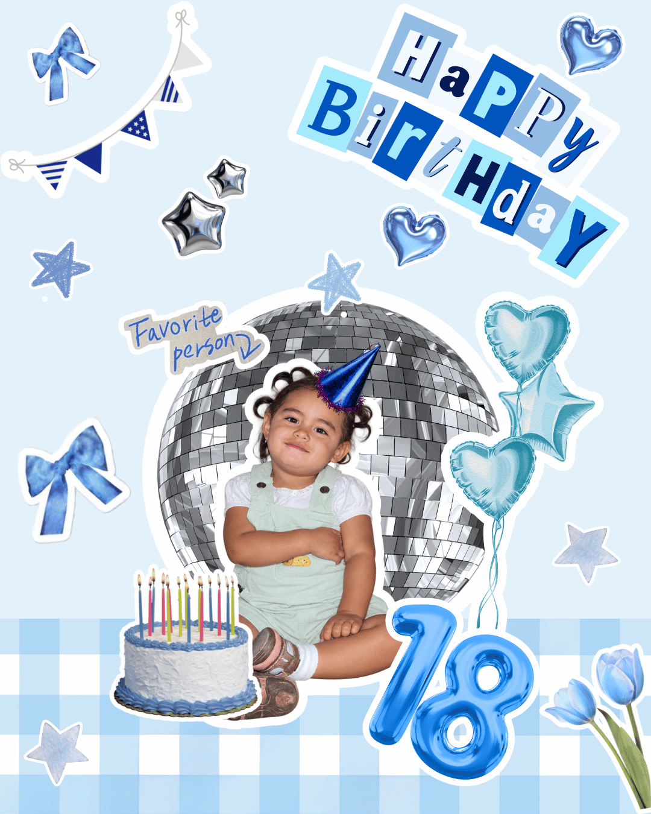
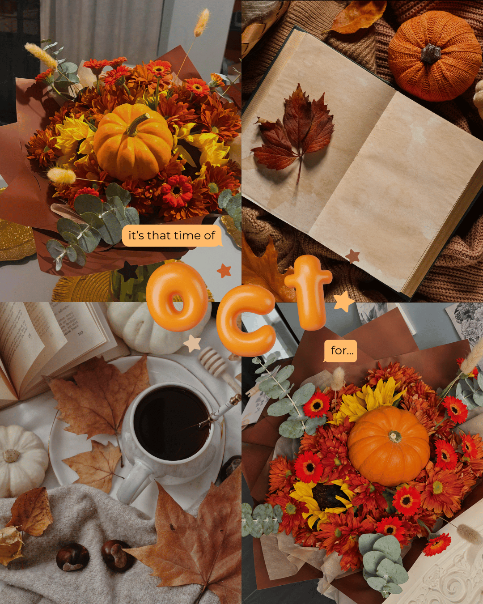

UN PEQUEÑO REGALO, SOLO PARA TI
Antes de continuar,
necesito preguntarte algo.
¿Te acuerdas
de las flores?
Hay algo ahí en esas dedicatorias
💙 💙 💙Entonces ya
podemos continuar.

Algunas linternas guardan palabras
Toca las linternas. Tómate tu tiempo.
Siete linternas, siete pequeñas dedicatorias.
¡Feliz cumpleaños,
Azul!




Espero que hoy recibas un poquito de toda la alegría que mereces. Gracias por llegar hasta aquí. ♡